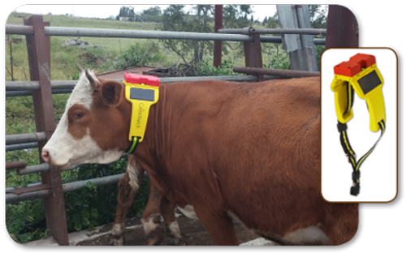
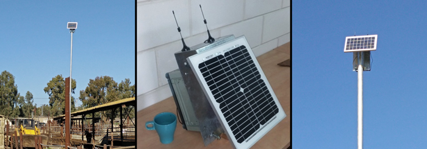

Pakiet Dodatkowy
Pakiet rozszerzony polega na tym, że część Twojego stada (ok 4%) nosi specjalne obroże typu master które wyposażone są w minikomputer, zestaw czujników, system GSM oraz GPS. Dzięki temu możliwe jest dokładne określenie położenia zwierzęcia na pastwisku. Pozostałe zwierzęta w zależności od potrzeb Twojego stada mogą mieć obroże typu slave, które nie mają modułu GPS ani GSM. Określają swoje położenie dzięki znajomości położenia obroży master. Obroże komunikują się ze sobą w technologii sBLE (super bluetooth low energy) która gwarantuje do 300 metrów zasięgu przy minimalnym zuzyciu energii. Każda obroża wyposażona jest w baterię słoneczną do dodatkowo przedłuża czas pracy który wynosi minium 10 lat.
Każda obroża posiada komplet czujników pozwalających pobranie najważniejszych paramtetrów zwierzęcia: temperatura ciała, prędkość ruchu, puls. Dzięki temu nas algorytm może z wysoką dokładnością określić czy zwierze jest w rui, czy się porusza, czy śpi itd. Ostatni znany status każdego ze zwierząt możesz sprawdzić w naszej aplikacji w każdej chwili.
W miarę swoich możliwości finansowych część zwierząt może nosić pasywne urządzenia RFID (kolczyki) które nie wymagają zasilania. Jeżeli zwierze z kolczykiem jest w pobliżu innego zwierzęcia które posiada obrożę master lub slave, możliwe jest ustalenie lokalizacji oraz przesłanie jej do systemu Smart Rolnik. Efektywny zasięg kolczyków to 100 metrów.
System jest bardzo elastyczny. W każdej chwili możesz go rozszerzyć dodawać do niego kolejne moduły i obroże.
Gdy na danym terenie nie ma zasięgu anten naziemnych GPRS isniteje możliwość budowy specjalnej anteny komunikującej się z satelitami IRIDIUM. Antena posiada baterię słoneczą i akmulator który gwarantuje 20 lat nieprzerwanej pracy.
Wszystkie dane trzymane są na naszych serwerach w chmurze.
Koszt
Niektóre urządzenia możesz wypożyczyć na okres zamiast od razu kupować na własność.| cena jednostkowa | abonament (wypożyczenie) - miesiąc | |
| Kolczyk RFID | 0,80zł | - |
| Obroża master | 800zł | 25zł |
| Obroża slave | 200zł | 5zł |
| Budowa masztu GPRS | 10000zł | - |
| Koszt utrzymania połączenia z satelitą IRIDIUM | - | 500zł |
| System SmartRolnik - aplikacja | - | 200zł |
| Utrzymanie bazy danych (koszt na jedno zwierze) | - | 1zł |